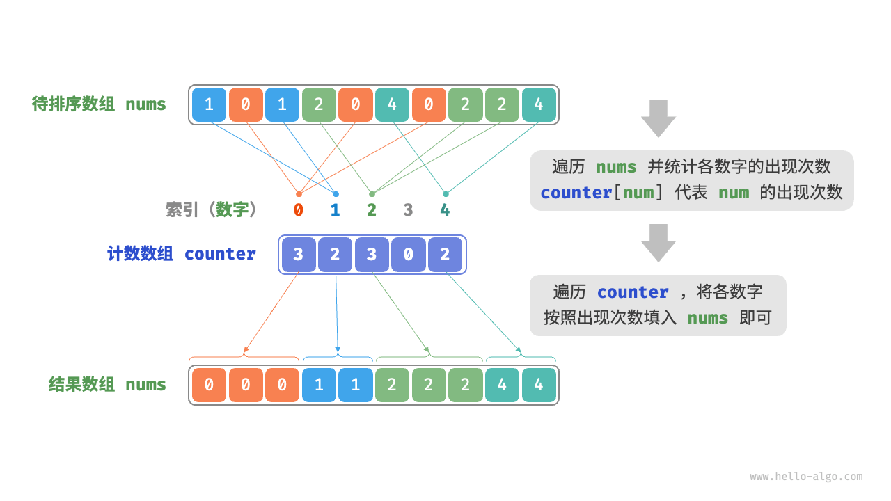
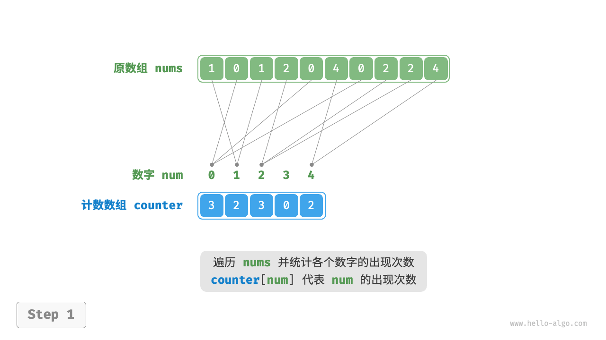
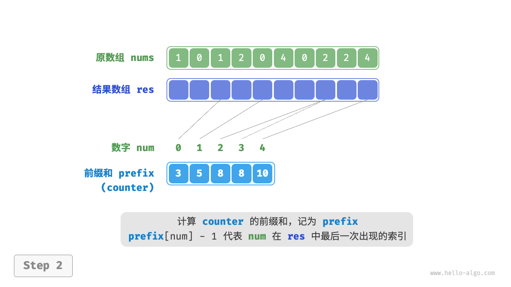
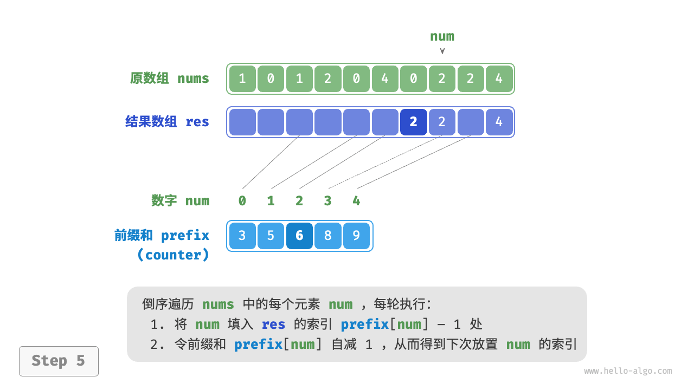
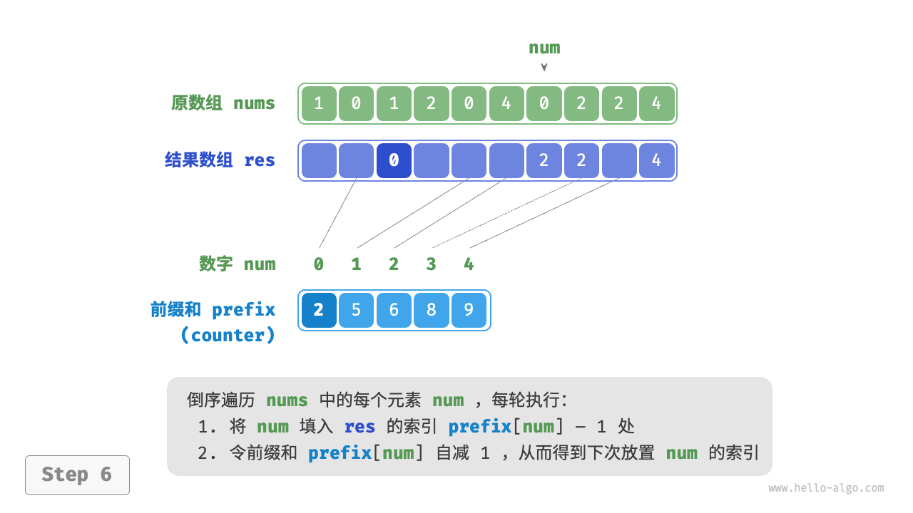
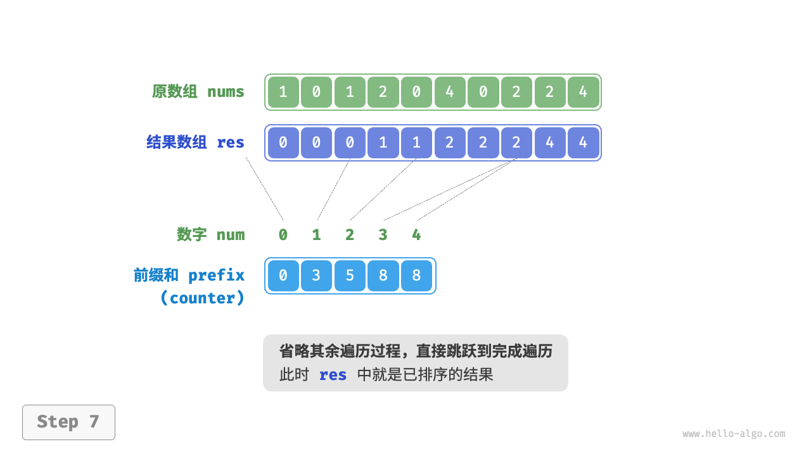
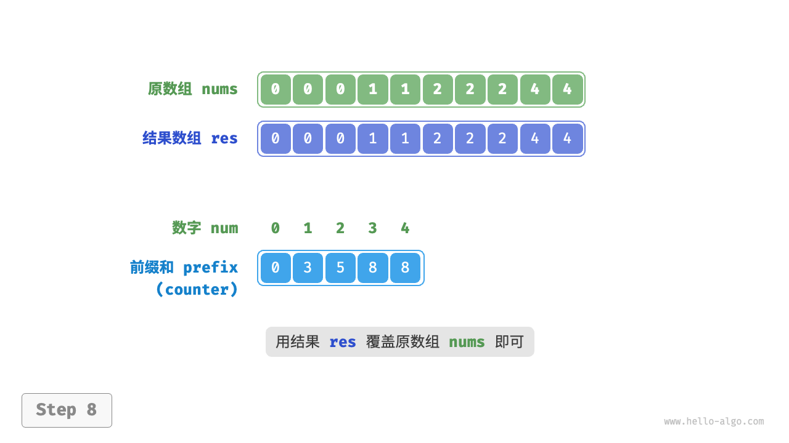

计数排序
「计数排序 counting sort」通过统计元素数量来实现排序，通常应用于整数数组。
简单实现
先来看一个简单的例子。给定一个长度为 $n$ 的数组 nums ，其中的元素都是“非负整数”，计数排序的整体流程如下图所示。
- 遍历数组，找出其中的最大数字，记为 $m$ ，然后创建一个长度为 $m + 1$ 的辅助数组
counter。 - 借助
counter统计nums中各数字的出现次数，其中counter[num]对应数字num的出现次数。统计方法很简单，只需遍历nums（设当前数字为num），每轮将counter[num]增加 $1$ 即可。 - 由于
counter的各个索引天然有序，因此相当于所有数字已经排序好了。接下来，我们遍历counter，根据各数字出现次数从小到大的顺序填入nums即可。

代码如下所示：
"Python"
def counting_sort_naive(nums: list[int]): """计数排序""" // 简单实现，无法用于排序对象 // 1. 统计数组最大元素 m m = 0 for num in nums: m = max(m, num) // 2. 统计各数字的出现次数 // counter[num] 代表 num 的出现次数 counter = [0] * (m + 1) for num in nums: counter[num] += 1 // 3. 遍历 counter ，将各元素填入原数组 nums i = 0 for num in range(m + 1): for _ in range(counter[num]): nums[i] = num i += 1"C++"
/* 计数排序 */ // 简单实现，无法用于排序对象 void countingSortNaive(vector<int> &nums) { // 1. 统计数组最大元素 m int m = 0; for (int num : nums) { m = max(m, num); } // 2. 统计各数字的出现次数 // counter[num] 代表 num 的出现次数 vector<int> counter(m + 1, 0); for (int num : nums) { counter[num]++; } // 3. 遍历 counter ，将各元素填入原数组 nums int i = 0; for (int num = 0; num < m + 1; num++) { for (int j = 0; j < counter[num]; j++, i++) { nums[i] = num; } } }"Java"
/* 计数排序 */ // 简单实现，无法用于排序对象 void countingSortNaive(int[] nums) { // 1. 统计数组最大元素 m int m = 0; for (int num : nums) { m = Math.max(m, num); } // 2. 统计各数字的出现次数 // counter[num] 代表 num 的出现次数 int[] counter = new int[m + 1]; for (int num : nums) { counter[num]++; } // 3. 遍历 counter ，将各元素填入原数组 nums int i = 0; for (int num = 0; num < m + 1; num++) { for (int j = 0; j < counter[num]; j++, i++) { nums[i] = num; } } }
!!! note "计数排序与桶排序的联系"
从桶排序的角度看，我们可以将计数排序中的计数数组 `counter` 的每个索引视为一个桶，将统计数量的过程看作将各个元素分配到对应的桶中。本质上，计数排序是桶排序在整型数据下的一个特例。
完整实现
细心的读者可能发现了，如果输入数据是对象，上述步骤 3. 就失效了。假设输入数据是商品对象，我们想按照商品价格（类的成员变量）对商品进行排序，而上述算法只能给出价格的排序结果。
那么如何才能得到原数据的排序结果呢？我们首先计算 counter 的“前缀和”。顾名思义，索引 i 处的前缀和 prefix[i] 等于数组前 i 个元素之和：
$$ \text{prefix}[i] = \sum_{j=0}^i \text{counter[j]}
$$
前缀和具有明确的意义，prefix[num] - 1 代表元素 num 在结果数组 res 中最后一次出现的索引。这个信息非常关键，因为它告诉我们各个元素应该出现在结果数组的哪个位置。接下来，我们倒序遍历原数组 nums 的每个元素 num ，在每轮迭代中执行以下两步。
- 将
num填入数组res的索引prefix[num] - 1处。 - 令前缀和
prefix[num]减小 $1$ ，从而得到下次放置num的索引。
遍历完成后，数组 res 中就是排序好的结果，最后使用 res 覆盖原数组 nums 即可。下图展示了完整的计数排序流程。
"<1>" 
"<2>" 
"<3>"

"<4>"
"<5>" 
"<6>" 
"<7>" 
"<8>" 
计数排序的实现代码如下所示：
"Python"
def counting_sort(nums: list[int]): """计数排序""" // 完整实现，可排序对象，并且是稳定排序 // 1. 统计数组最大元素 m m = max(nums) // 2. 统计各数字的出现次数 // counter[num] 代表 num 的出现次数 counter = [0] * (m + 1) for num in nums: counter[num] += 1 // 3. 求 counter 的前缀和，将“出现次数”转换为“尾索引” // 即 counter[num]-1 是 num 在 res 中最后一次出现的索引 for i in range(m): counter[i + 1] += counter[i] // 4. 倒序遍历 nums ，将各元素填入结果数组 res // 初始化数组 res 用于记录结果 n = len(nums) res = [0] * n for i in range(n - 1, -1, -1): num = nums[i] res[counter[num] - 1] = num // 将 num 放置到对应索引处 counter[num] -= 1 // 令前缀和自减 1 ，得到下次放置 num 的索引 // 使用结果数组 res 覆盖原数组 nums for i in range(n): nums[i] = res[i]"C++"
/* 计数排序 */ // 完整实现，可排序对象，并且是稳定排序 void countingSort(vector<int> &nums) { // 1. 统计数组最大元素 m int m = 0; for (int num : nums) { m = max(m, num); } // 2. 统计各数字的出现次数 // counter[num] 代表 num 的出现次数 vector<int> counter(m + 1, 0); for (int num : nums) { counter[num]++; } // 3. 求 counter 的前缀和，将“出现次数”转换为“尾索引” // 即 counter[num]-1 是 num 在 res 中最后一次出现的索引 for (int i = 0; i < m; i++) { counter[i + 1] += counter[i]; } // 4. 倒序遍历 nums ，将各元素填入结果数组 res // 初始化数组 res 用于记录结果 int n = nums.size(); vector<int> res(n); for (int i = n - 1; i >= 0; i--) { int num = nums[i]; res[counter[num] - 1] = num; // 将 num 放置到对应索引处 counter[num]--; // 令前缀和自减 1 ，得到下次放置 num 的索引 } // 使用结果数组 res 覆盖原数组 nums nums = res; }"Java"
/* 计数排序 */ // 完整实现，可排序对象，并且是稳定排序 void countingSort(int[] nums) { // 1. 统计数组最大元素 m int m = 0; for (int num : nums) { m = Math.max(m, num); } // 2. 统计各数字的出现次数 // counter[num] 代表 num 的出现次数 int[] counter = new int[m + 1]; for (int num : nums) { counter[num]++; } // 3. 求 counter 的前缀和，将“出现次数”转换为“尾索引” // 即 counter[num]-1 是 num 在 res 中最后一次出现的索引 for (int i = 0; i < m; i++) { counter[i + 1] += counter[i]; } // 4. 倒序遍历 nums ，将各元素填入结果数组 res // 初始化数组 res 用于记录结果 int n = nums.length; int[] res = new int[n]; for (int i = n - 1; i >= 0; i--) { int num = nums[i]; res[counter[num] - 1] = num; // 将 num 放置到对应索引处 counter[num]--; // 令前缀和自减 1 ，得到下次放置 num 的索引 } // 使用结果数组 res 覆盖原数组 nums for (int i = 0; i < n; i++) { nums[i] = res[i]; } }
算法特性
- 时间复杂度为 $O(n + m)$ ：涉及遍历
nums和遍历counter，都使用线性时间。一般情况下 $n \gg m$ ，时间复杂度趋于 $O(n)$ 。 - 空间复杂度为 $O(n + m)$、非原地排序：借助了长度分别为 $n$ 和 $m$ 的数组
res和counter。 - 稳定排序：由于向
res中填充元素的顺序是“从右向左”的，因此倒序遍历nums可以避免改变相等元素之间的相对位置，从而实现稳定排序。实际上，正序遍历nums也可以得到正确的排序结果，但结果是非稳定的。
局限性
看到这里，你也许会觉得计数排序非常巧妙，仅通过统计数量就可以实现高效的排序。然而，使用计数排序的前置条件相对较为严格。
计数排序只适用于非负整数。若想将其用于其他类型的数据，需要确保这些数据可以转换为非负整数，并且在转换过程中不能改变各个元素之间的相对大小关系。例如，对于包含负数的整数数组，可以先给所有数字加上一个常数，将全部数字转化为正数，排序完成后再转换回去。
计数排序适用于数据量大但数据范围较小的情况。比如，在上述示例中 $m$ 不能太大，否则会占用过多空间。而当 $n \ll m$ 时，计数排序使用 $O(m)$ 时间，可能比 $O(n \log n)$ 的排序算法还要慢。